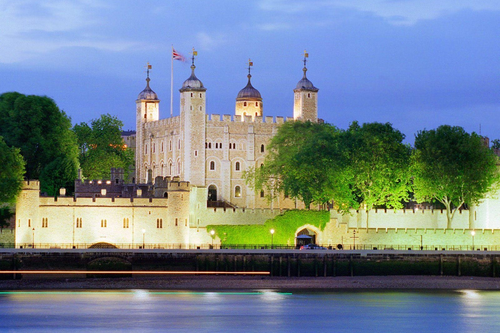
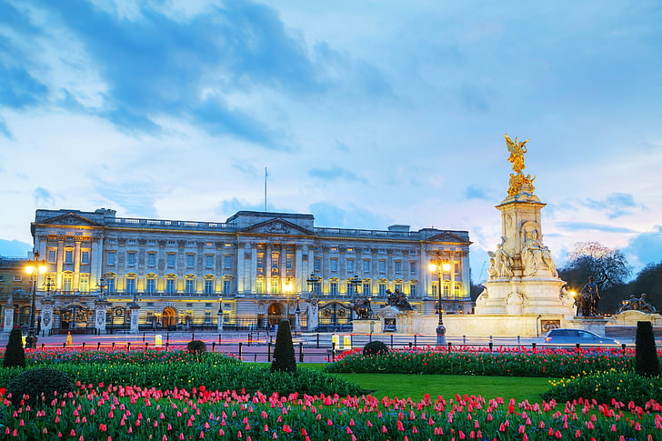
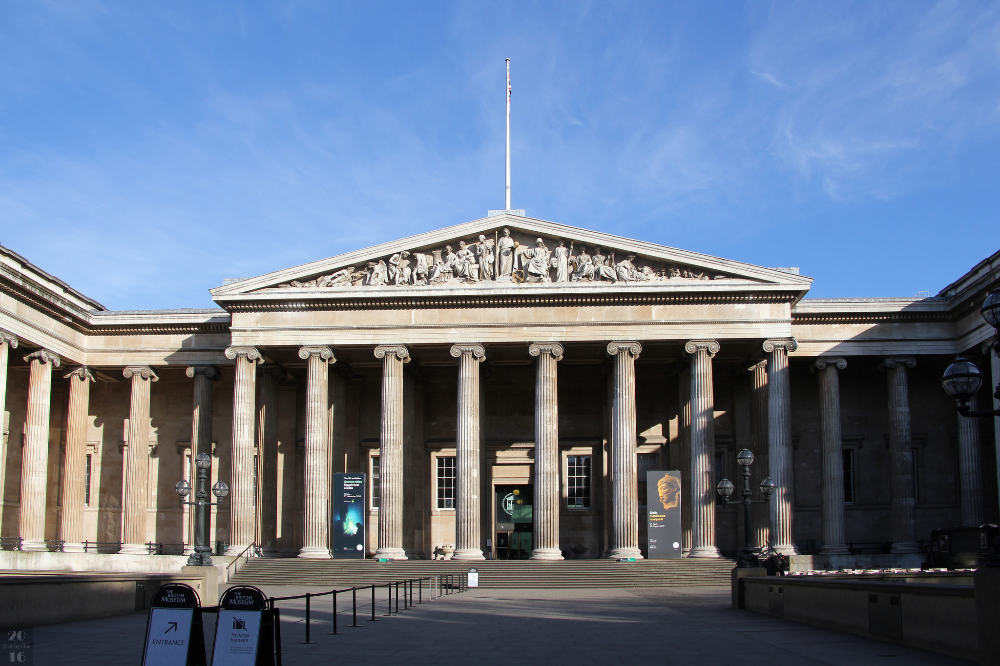

Tower of London
The Tower of London is a historic castle located on the north bank of the River Thames, known for its role in British history.
- Culture:
- The Yeoman Warders, known as Beefeaters, provide guided tours and share fascinating stories about the Tower's history.
- It is home to the Crown Jewels, a collection of royal regalia and insignia, symbolizing the monarchy's power.
- History:
- Built by William the Conqueror in 1066, it served as a royal palace, fortress, and prison, symbolizing the power of the monarchy.
- Throughout its history, it has housed notable prisoners, including Anne Boleyn and Sir Thomas More, and has witnessed numerous executions.

Location: Tower of London, Tower Bridge
- Getting There:
- Accessible via the London Underground, with Tower Hill station nearby.
- Numerous bus routes serve the area, making it easy to reach.
- Climate:
- Temperate maritime climate with mild temperatures year-round.
- Average summer temperatures around 22°C (72°F), while winter temperatures can drop to 2°C (36°F).
- Best time to visit is during spring (March to May) and autumn (September to November).
Buckingham Palace
As the official residence of the British monarch, Buckingham Palace is a must-see for visitors to London.
- Culture:
- The Changing of the Guard ceremony is a famous event that showcases British pageantry and attracts many visitors.
- The State Rooms are open to the public during the summer months, offering a glimpse into royal life and history.
- History:
- Originally built in 1703 for the Duke of Buckingham, it became the official royal residence in 1837 when Queen Victoria ascended the throne.
- The palace has been the site of numerous royal events, including weddings and state banquets, reflecting its importance in British history.

Location: Buckingham Palace, St. James's Park
- Getting There:
- Located near Green Park and Victoria stations, easily accessible by the Underground.
- Multiple bus routes serve the area, providing convenient access.
- Climate:
- Temperate maritime climate with mild winters and warm summers.
- Average summer temperatures around 24°C (75°F), while winter temperatures can drop to 0°C (32°F).
- Best time to visit is during late spring (May to June) and early autumn (September to October).
British Museum
The British Museum houses a vast collection of world art and artifacts, showcasing human history and culture.
- Culture:
- Notable exhibits include the Rosetta Stone and the Elgin Marbles, which are crucial to understanding ancient cultures.
- The museum hosts various exhibitions and educational programs that promote cultural understanding and appreciation.
- History:
- Founded in 1753, it was the first public national museum in the world, dedicated to human history and culture.
- The museum's collection includes artifacts from ancient civilizations, reflecting the history of human achievement.

Location: British Museum, Bloomsbury
- Getting There:
- Located near Holborn and Tottenham Court Road stations, easily accessible by the Underground.
- Several bus routes serve the area, making it convenient to visit.
- Climate:
- Temperate maritime climate with mild temperatures throughout the year.
- Average summer temperatures around 22°C (72°F), while winter temperatures can drop to 1°C (34°F).
- Best time to visit is during spring (March to May) and autumn (September to November) for pleasant weather.